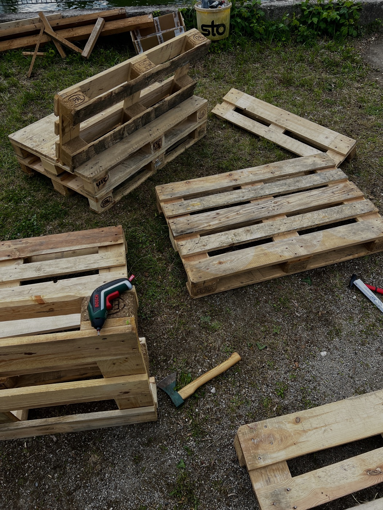
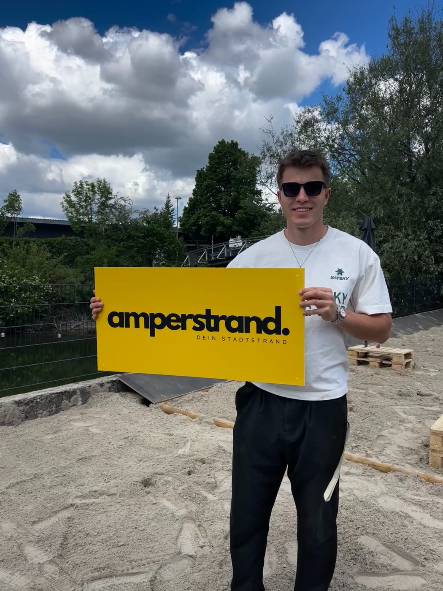
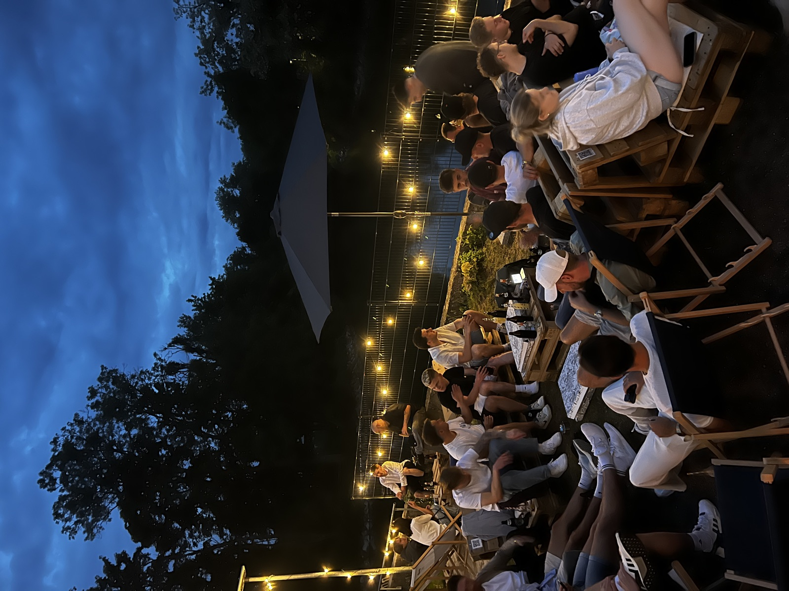

2025

Wie alles anfing.
2025 eröffnete der Amperstrand als Stadtstrand von Fürstenfeldbruck — ein kleiner Kiosk direkt an der Amper, im Kreativquartier an der Bullachstraße. Die Idee war einfach: ein Ort draußen, an dem man sich ohne großes Tamtam trifft, ein Bier trinkt und auf's Wasser schaut.
Wir

Kein Restaurant, kein Club.
Eigentlich wollten wir nur 'nen Ort, an dem man nach Feierabend rausläuft, sich ein Bier holt und ans Wasser setzt. Mehr nicht. Dass jetzt auch andere mitsitzen — passt uns gut.
heute

Gleich geblieben.
In der zweiten Saison steht das Konzept wie am ersten Tag: Donnerstag bis Sonntag offen, solange das Wetter mitspielt. Wenn's regnet, bleiben wir zu. Wenn die Sonne scheint, ist Bruck am Amperstrand.